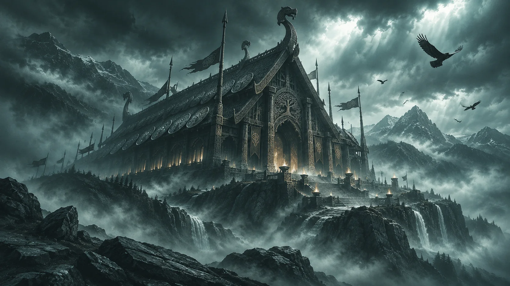

01 / 0601 / DAS REISEZIEL
Willkommen in Walhalla!
Entdecken Sie Walhalla, die sagenhafte Halle des Gottes Odin in der nordischen Götterwelt Asgard! Hier erwartet ausgewählte gefallene Krieger ein außergewöhnliches Leben nach dem Tod. Die Überlieferungen beschreiben ein prächtiges Bauwerk mit einem Dach aus Schilden, Speeren als Dachsparren und 540 Toren. Walhalla ist eines der bekanntesten Jenseitsbilder der altnordischen Mythologie.
Quellen: Grímnismál, Str. 8–9, 23. ↗
Hintergrund entdecken
Was bedeutet „Walhalla“?
Der Name wird häufig als „Halle der Gefallenen“ wiedergegeben. In den Edda-Texten ist die Halle Teil eines mythologischen, nicht geografisch lokalisierbaren Jenseitsbildes.
Bezug: Grímnismál 8–9, 23